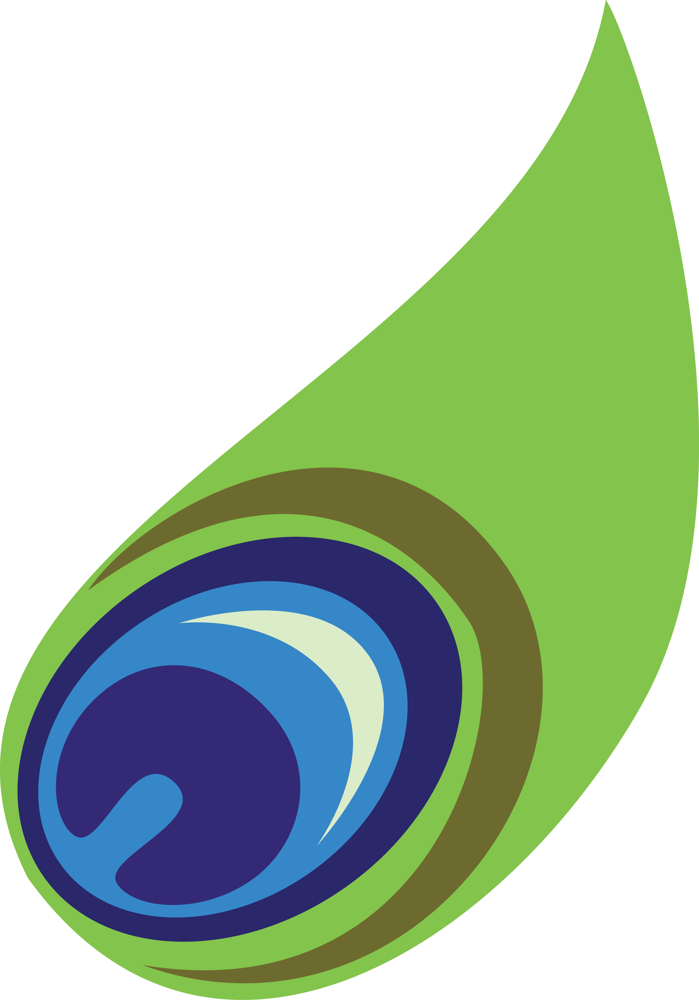

01
यमुनाजल की शांत लय

CHOTOVRINDAVAN01 — छोटोवृन्दावन
यह केवल एक मंदिर नहीं...
यह एक अनुभव है।
एक स्मृति है। एक भावना है।
एक घर है।
हर यात्रा बाहर से भीतर की ओर जाती है।
आपका स्वागत है।
यहाँ हर पत्थर में एक कहानी बसी है, हर घंटी की ध्वनि में एक प्रार्थना है। छोटोवृन्दावन उस भाव को जीवंत करता है जो वृन्दावन की गलियों में सदियों से बहता आया है — सरलता, समर्पण और सामूहिक श्रद्धा का भाव। यहाँ आने वाला हर भक्त केवल दर्शन के लिए नहीं, बल्कि अपने भीतर की शांति को फिर से पाने के लिए आता है।
02 — अनुभव
स्क्रॉल कीजिए और उस भाव में उतरिए, जिसे शब्दों में बाँधना कठिन है।
03 — सजीव दर्शन
जहाँ से भी हों, श्री चरणों के समीप आइए।
दूर होकर भी दूर नहीं — हमारी सजीव प्रसारण सेवा के माध्यम से प्रतिदिन की आरती और श्रृंगार दर्शन सीधे आपके घर तक पहुँचते हैं। जब मंदिर की घंटियाँ बजें, आप भी उसी क्षण में जुड़ सकते हैं।
04 — संध्या का समय
आइए, दीपों की इस ज्योति में अपनी श्रद्धा जोड़ें।
जैसे ही सूर्य ढलता है, मंदिर परिसर घंटियों की ध्वनि और शंखनाद से गूँज उठता है। सैकड़ों दीपों की मिली-जुली रोशनी में हर भक्त का चेहरा एक ही भाव में डूब जाता है — कृतज्ञता का भाव। यह क्षण दिन भर की भागदौड़ के बाद मन को उसके मूल स्वभाव — शांति — में लौटा देता है।
आरती में सम्मिलित हों →05 — समर्पण
सेवा ही सबसे सुंदर समर्पण है।
अपनी भावना को एक सुंदर कर्म का रूप दीजिए।
हर सेवा, चाहे छोटी हो या बड़ी, मंदिर की नित्य व्यवस्था और भक्तों के सुख का आधार बनती है।
श्री विग्रह के श्रृंगार हेतु स्नेहपूर्ण अर्पण। प्रतिदिन ताज़े पुष्पों से सजता है श्रृंगार, और आपका योगदान इस सौंदर्य को निरंतर बनाए रखता है।
सेवा समर्पित करें ↗प्रसाद और भोजन के माध्यम से प्रेम का विस्तार। भक्तों और ज़रूरतमंदों तक प्रसाद पहुँचाने का यह क्रम, सेवा और स्नेह दोनों का प्रतीक है।
सेवा समर्पित करें ↗संरक्षण, पोषण और वात्सल्य के लिए योगदान। गौमाता की सेवा भारतीय सनातन परंपरा की जड़ों से जुड़ी है — इसमें भाग लेना उसी परंपरा को आगे बढ़ाना है।
सेवा समर्पित करें ↗सामूहिक भंडारे और विशेष अवसरों पर सामुदायिक भोजन व्यवस्था में सहयोग — जहाँ हर थाली एक आशीर्वाद बनकर पहुँचती है।
सेवा समर्पित करें ↗श्री विग्रह के नित्य एवं उत्सव वस्त्रों के निर्माण व रखरखाव में योगदान — हर धागे में भक्ति बुनी जाती है।
सेवा समर्पित करें ↗मंदिर परिसर के विस्तार, रखरखाव और नवीनीकरण कार्यों में सहभागिता — आने वाली पीढ़ियों के लिए एक स्थायी नींव।
सेवा समर्पित करें ↗श्रद्धा का
एक दीप
06 — अपनी श्रद्धा समर्पित करें
योगदान मंदिर व्यवस्था, अन्नदान, गौसेवा और भक्त सेवा में सहायक होगा।
[योगदान का वास्तविक उपयोग यहाँ जोड़ा जाए]
07 — हमारी यात्रा
हर मंदिर की एक कहानी होती है। छोटोवृन्दावन की कहानी, उसके लोगों, उसकी सेवा और उसके स्वप्नों से लिखी जानी है।
यह यात्रा कुछ श्रद्धालुओं के एक संकल्प से आरंभ हुई — वृन्दावन की भावना को उन लोगों तक पहुँचाने का संकल्प, जो दूर होकर भी उस पावन भूमि से जुड़े रहना चाहते हैं। धीरे-धीरे यह विचार एक समुदाय बना, समुदाय एक सेवा बना, और सेवा ने इस मंदिर को जन्म दिया।
आज छोटोवृन्दावन केवल पूजा-स्थल नहीं, बल्कि एक ऐसा स्थान है जहाँ परिवार इकट्ठा होते हैं, बच्चे संस्कार सीखते हैं और वृद्धजन अपने विश्वास में शांति पाते हैं। हर उत्सव, हर सेवा और हर दर्शन इस यात्रा को आगे बढ़ाता है।
[TEMPLE HISTORY / FOUNDER STORY]
हमारी यात्रा जानिए →08 — उत्सव
हर उत्सव, मिलकर याद रखने का एक सुंदर कारण है। साल भर मंदिर में उमंग और भक्ति के रंग बिखरे रहते हैं।
09 — साथ का प्रभाव
हर सेवा, हर अर्पण और हर उपस्थिति मिलकर एक बड़े प्रभाव को जन्म देती है — ऐसा प्रभाव जो मंदिर की दीवारों से बाहर निकलकर समाज तक पहुँचता है।
[वास्तविक प्रभाव आँकड़े उपलब्ध होने पर प्रतिस्थापित करें]
10 — पधारिए
छोटोवृन्दावन के द्वार सभी भक्तों के लिए सदैव खुले हैं — चाहे आप दर्शन हेतु आएं, सेवा में सम्मिलित हों, या केवल कुछ पल शांति के साथ बिताना चाहें।
[TEMPLE ADDRESS]
[CITY, STATE, INDIA]
[DARSHAN TIMINGS] · [CONTACT NUMBER]
[EMAIL / WHATSAPP / SOCIAL LINKS]
दिशा प्राप्त करें ↗